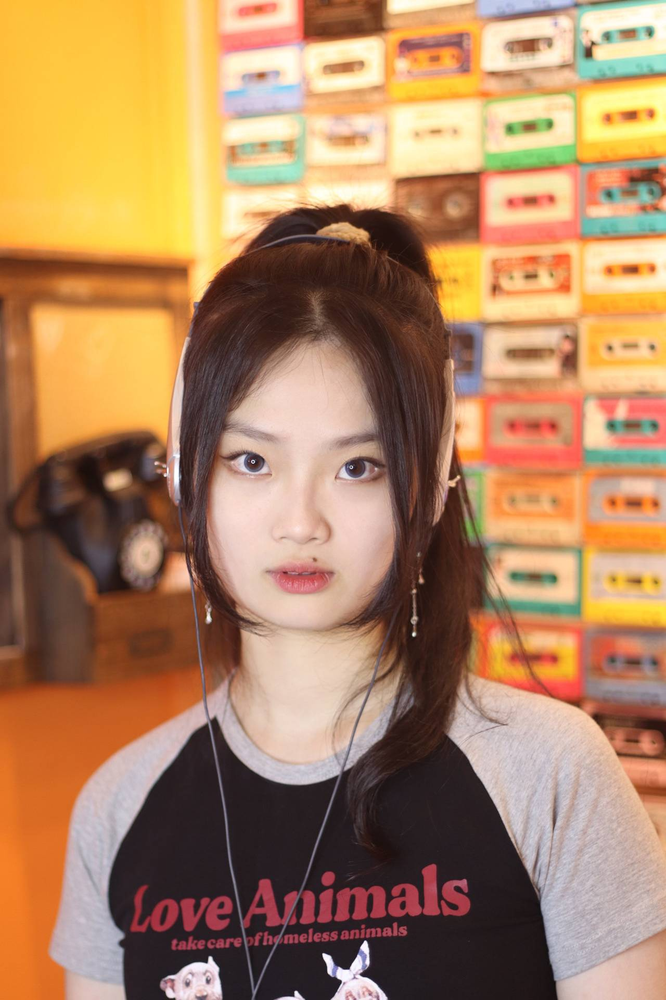
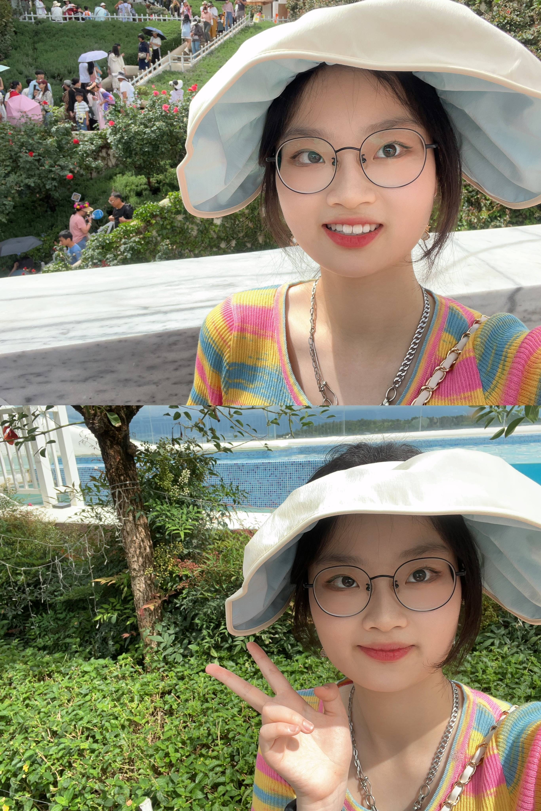
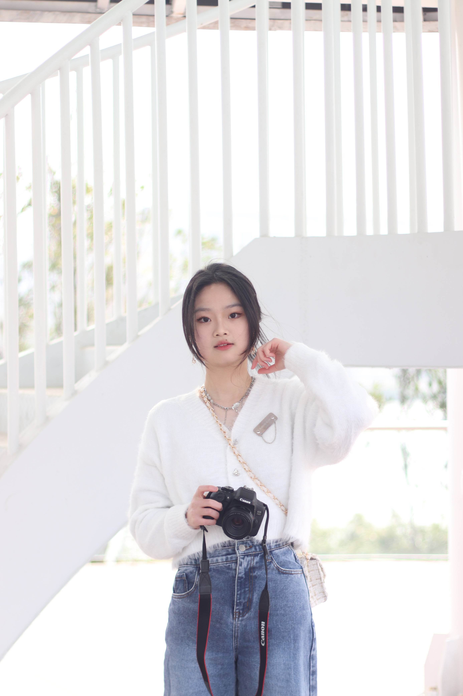
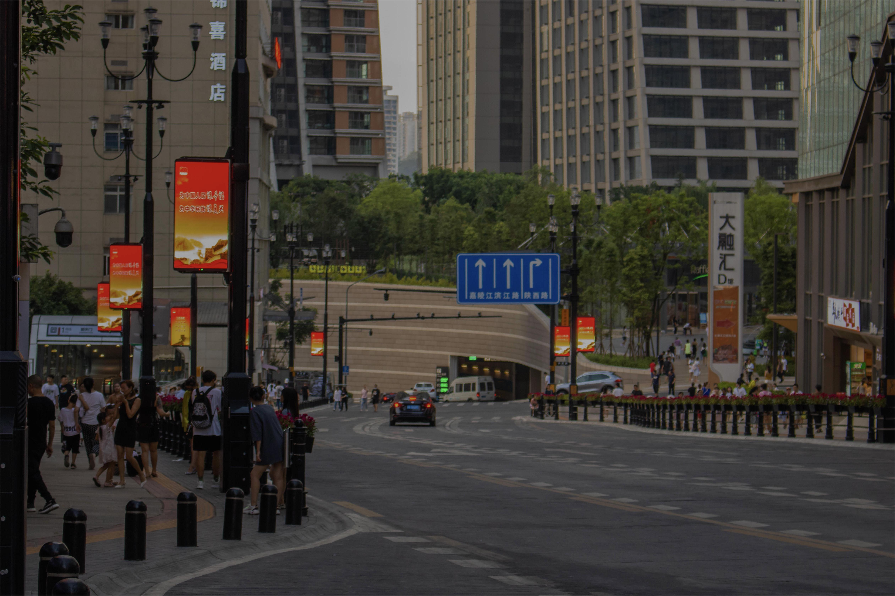
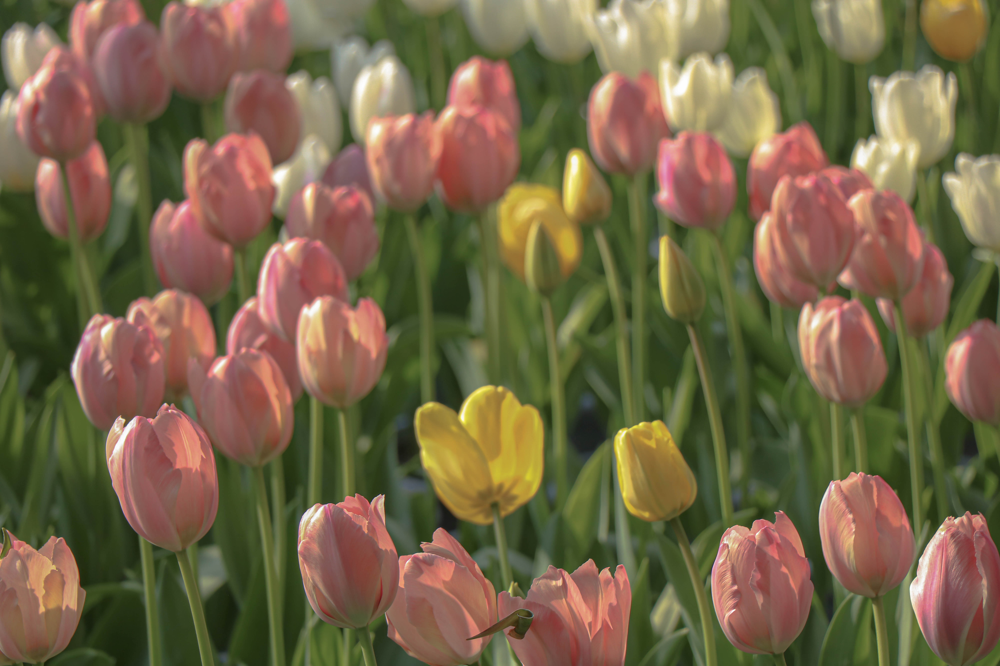
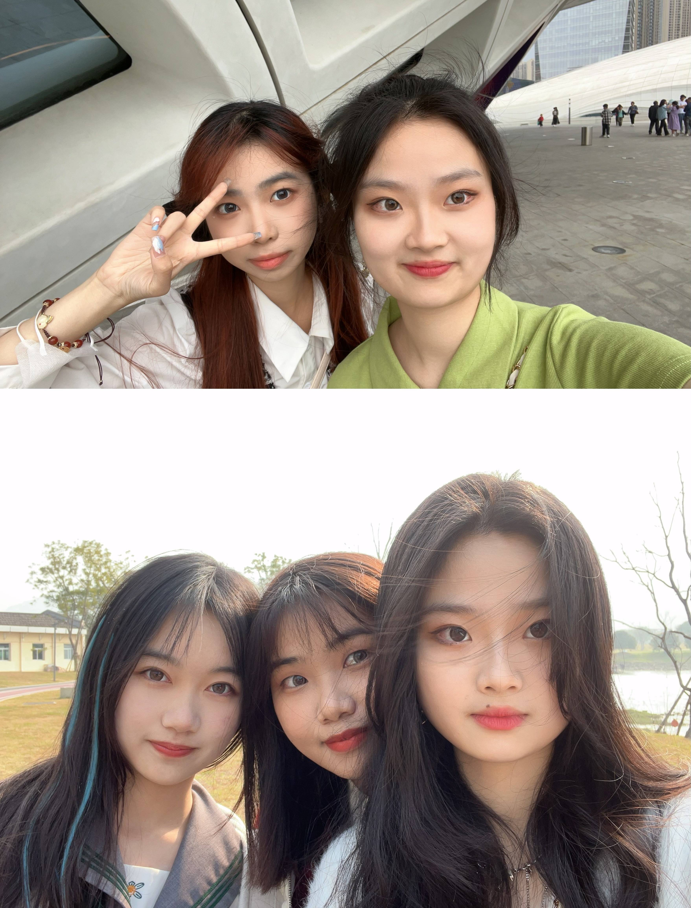
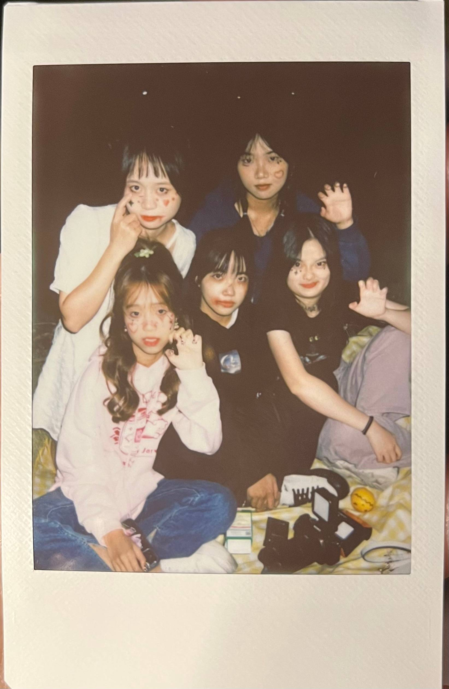
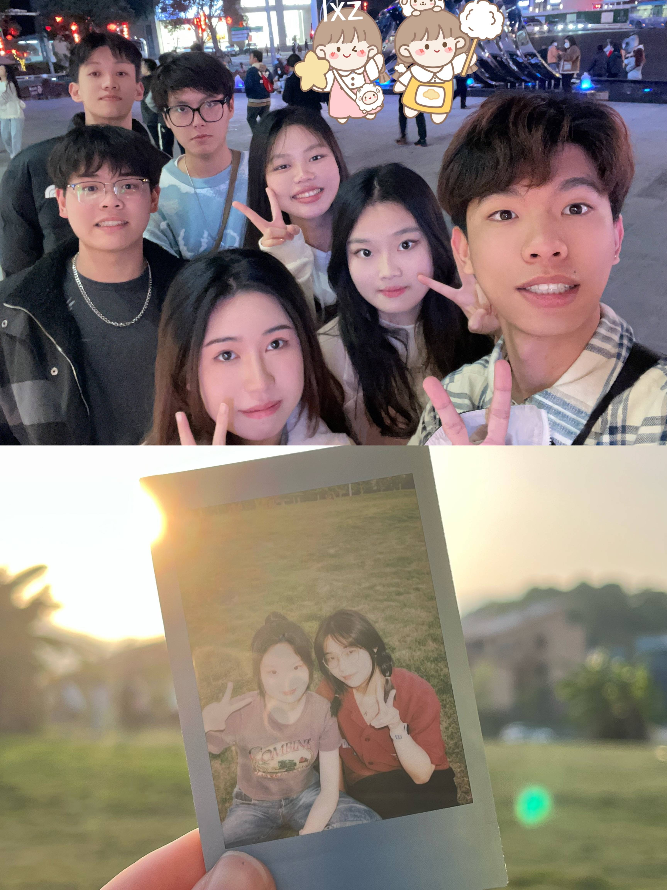

关于我
hi,我叫杨予晴，来自福建福州，MBTI为ESFJ，就读于福州大学计算机与大数据学院2021级数据科学与大数据技术专业。 我爱好摄影，也喜欢旅游，在课余时间或是寒暑假，总会拿起相机，拍摄照片或者录制一些小片段，通过一些后期处理，记录下每个陌生城市的独家记忆； 同时人像摄影的领域我也时常涉猎，洞察世界上多元化美的同时，在最好的角度定格瞬间。 比起电影电视剧，闲暇时间我更喜欢看综艺，在综艺中我可以获取到很多快乐与正向的情绪反馈，也容易被一些真情实感的情节所感动，与我而言这不失为一种防止内耗的放松方式。
  部分摄影作品展示
 
成就与经验
细看两年的大学生活，过的也还算充实，没有放弃自己的兴趣爱好，也按时完成课业任务，也学到了许多在此之前从未涉猎领域的知识，有一定的实战经验。积极参与各类学生活动与竞赛，获得过二等与三等的综合奖学金，同时也在高数竞赛，数学建模比赛中取得还不错的成绩。在两年的学习中，我接触到了c、python、java等语言，也学习了计算机组成原理、操作系统、数据结构等专业课程，也在不断探索中深入，但对于语言的学习与应用并不精通，也只是入门进阶水平，希望在未来的学习中可以不断深入，提高编写代码尤其是java语言的能力。
在专业之外，我担任校融媒体中心旗下部门负责人之一，和其他负责人一起带领团队运营福州大学官方视频号、官方b站，成就感满满。
未来发展
对于未来三年的设想其实没有太过于细致，希望可以在大三上好好享受一下大学生活的同时也要好好利用大三专业课带来的锻炼机会，学习新知识，提升各方面的个人专业能力和团队协作能力，同时，在不多的课余时间里依然可以尝试感受一些自己感兴趣的事物。大三下在不落下课程内容的前提下，可以开始备战考研，大四上全力奋战考研，大四下认真完成毕业设计与论文，为大学四年画上完美的句号。至于未来是否会考公考编，目前还没有很清晰明确的规划，不过也不必太过焦虑，未来的事就顺其自然，在不愧对于自己的前提下相信一切都是最好的安排！
  